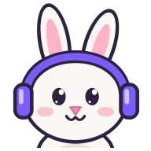

Onion Board
A free soundboard for Windows. Press a pad or a hotkey, even in-game, and your friends in Discord or your game hear it through your mic.
⬇ Download for WindowsVersion 1.9.20 · Windows 10 / 11 · free, no account, no ads, anonymous usage count you can switch off
VirusTotal: 69 of 69 clean ·
what's new

What it does
🎤 No virtual cableSounds go straight into the mic you already use in Discord and games, with your voice or without it.
🔎 One-click soundsSearch YouTube, SoundCloud and Myinstants in the app and add a sound in one click. Or drag in files.
⌨️ Hotkeys that work in-gamePlus an in-game overlay, MIDI pads and Stream Deck. Open your game and the board switches to its sounds.
📦 Bring your board overComing from Soundpad, Resanance, Soundux or EXP Soundboard? Your sounds and hotkeys come with you in one click.
🎛️ Effects on any soundTrim, speed, pitch, bass boost. One-click Deep fried and Nightcore. Live on the radio and shared programs too.
🤖 Voice changer and TTSChange your voice live, or type and a computer voice says it, in 33 languages. Optional AI voices: 12 characters, or blend your own.
✅ Checks Discord for youSpots the Discord settings that would cut your sounds out and shows how to fix them.
🎙️ Record a soundWith your mic, or a bit of whatever is playing: a pad, a search result, the radio.
🌍 In your languageThe whole app comes in 32 languages, plus 31 themes and your own highlight colour.
📻 And moreInstant replay, screen triggers, your pads on your phone, world radio, a clean OBS output. Full list
A closer look


Get started
- Download
OnionBoardSetup.exeand run it. - Bun the bunny asks which mic and headphones you use and sets the rest up.
- Click Put my sounds straight into my mic (Windows asks once). Discord and games keep your normal mic, so there's nothing to pick there. In Discord, set Input Profile to Custom, Noise Suppression to None and turn Echo Cancellation off, so it doesn't filter your sounds out (not Studio: on your mic, Studio skips Onion Board). Onion Board warns you if one of them is in the way. Already use Voicemeeter, a mixer or OBS? Pick it under Send my sounds to instead, or add it under Also send to.
Is it safe?
- Why Windows warns you: the app isn't code-signed yet (a certificate costs money every year), so Windows doesn't know it. Click More info → Run anyway (or ⋯ → Keep in Edge / Chrome). Every release is scanned on VirusTotal (the link is above).
- What needs admin, and why: only the one-click "straight into my mic" step. It adds a small audio effect to your mic in Windows' audio engine, backs up your mic's settings first, and puts them back when you switch it off or uninstall.
- What goes online: only what you ask for (searches, downloads, the radio), an update check, and an anonymous daily count you can switch off. Every request is listed in SECURITY.md, and the app shows them live under Settings → Connection → Network activity.
- Getting rid of it: uninstall it like any app in Windows' Settings. Your mic goes back
the way it was. Your own sounds stay in
%APPDATA%\OnionBoarduntil you delete them. - The full source is on GitHub.
Use winget? winget install OnionAlien.OnionBoard installs it from a
terminal with no clicks.